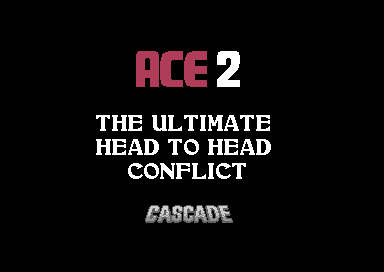
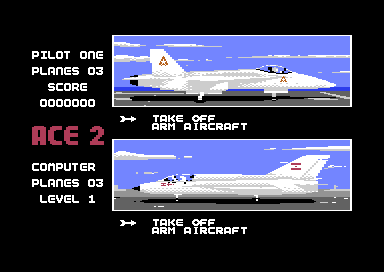

<meta charset="utf-8">
<meta name="viewport" content="width=device-width, initial-scale=1">
<title>ACE 2</title>
<link rel="preconnect" href="https://fonts.googleapis.com">
<link rel="stylesheet" href="https://fonts.googleapis.com/css2?family=Lato:wght@400;700;900&family=IBM+Plex+Mono:wght@400;500&display=swap">
<style>
:root{
  --bg:#23262d; --paper:#e9e7e1; --surface:#ffffff; --surface-2:#f1efea; --line:#d5d3cc; --line-soft:#e0ded8;
  --ink:#2f3136; --ink-soft:#55585f; --ink-mute:#80838a;
  --link:#1f5fa8; --link-hover:#154480; --accent:#1f5fa8;
  --amber:#c25a00; --cyan:#1f5fa8; --coral:#d04a3a; --green:#2a8a4a; --violet:#4a5bd6; --hl:#fff0c2;
  --chip:#2f3136; --chip-ink:#ffffff;
  --c64blue:#40318d; --c64grey:#686868;
  --fd:'Lato',system-ui,sans-serif; --fb:'Lato',system-ui,sans-serif; --fm:'IBM Plex Mono',ui-monospace,Menlo,monospace;
  --col:1080px; --gx:68px; --fs:17px; --lh:1.6; --hw:900; --h1:46px; --h2:26px; --sy:48px; --pp:26px; --r:10px;
  --plate-shadow:0 1px 2px rgba(0,0,0,.05),0 4px 14px rgba(0,0,0,.05);
}
*{box-sizing:border-box}
html{background:var(--bg);min-height:100%}
body{background:var(--paper);color:var(--ink);font-family:var(--fb);font-size:var(--fs);line-height:var(--lh);max-width:var(--col);margin:0 auto;min-height:100vh;padding:0 0 4rem}
h1,h2,h3{font-weight:var(--hw);letter-spacing:-.01em;text-wrap:balance;color:var(--ink);margin:0}
.wrap{padding:0 var(--gx)}
.hero{padding:48px var(--gx) 8px;text-align:left}
.eyebrow{font-family:var(--fm);font-size:12px;letter-spacing:.08em;text-transform:uppercase;color:var(--ink-mute);margin:0 0 10px}
.hero h1{font-size:var(--h1);line-height:1.15;letter-spacing:-.02em;margin:0 0 14px}
.hero .sub{margin:0 0 .6em;color:var(--ink-soft)}
section{padding:var(--sy) 0 24px}
section:last-of-type{border-bottom:none}
.fig{font-family:var(--fm);font-size:12px;letter-spacing:.08em;text-transform:uppercase;color:var(--ink-mute);margin:0 0 10px}
h2.t{font-size:var(--h2);margin-bottom:12px}
.lede{color:var(--ink-soft);margin:0 0 30px}
.plate{background:var(--surface);border:1px solid var(--line);border-radius:var(--r);padding:var(--pp);box-shadow:var(--plate-shadow)}
.cap{font-size:14px;color:var(--ink-mute);margin-top:14px;line-height:1.55}
.cap b{color:var(--ink);font-weight:700}
code{font-family:var(--fm);font-size:.82em;background:var(--chip);color:var(--chip-ink);border-radius:4px;padding:2px 6px;white-space:nowrap}
a{color:var(--link)}
.a2-cv{display:block;max-width:100%;height:auto;image-rendering:pixelated;border-radius:4px}
.a2-wide{width:100%}
.a2-stack{position:relative;line-height:0}
.a2-stack canvas+canvas{position:absolute;left:0;top:0;background:transparent}
.a2-bar{display:flex;flex-wrap:wrap;gap:8px;margin:0 0 14px;align-items:center}
.a2-btn{font:inherit;font-family:var(--fm);font-size:12.5px;background:var(--surface);border:1px solid var(--line);border-radius:6px;padding:5px 11px;color:var(--ink);cursor:pointer;line-height:1.3}
.a2-btn:hover{border-color:var(--ink-mute)}
.a2-btn[aria-pressed="true"]{background:var(--accent);border-color:var(--accent);color:#fff}
.a2-out{font-size:15px;color:var(--ink);margin:12px 0 0;min-height:3em;line-height:1.55}
.a2-shots{display:grid;grid-template-columns:minmax(0,1fr) minmax(0,1fr);gap:16px}
.a2-shots figure{margin:0}
.a2-shots img{display:block;width:100%;height:auto;image-rendering:pixelated;border-radius:4px}
.a2-shots figcaption{font-size:13px;color:var(--ink-mute);margin-top:6px;line-height:1.45}
.a2-tbl{border-collapse:collapse;font-size:14px;width:100%;margin:4px 0 0}
.a2-tbl th,.a2-tbl td{text-align:left;vertical-align:top;padding:5px 8px;border-bottom:1px solid var(--line-soft)}
.a2-tbl th{font-weight:700;color:var(--ink-soft)}
.a2-tbl td.a2-n,.a2-tbl th.a2-n{font-family:var(--fm);font-size:13px;white-space:nowrap}
.a2-tbl tr.a2-on td{background:var(--hl)}
.a2-tbl tr.a2-off td{color:var(--ink-mute)}
.a2-scroll{overflow-x:auto}
.a2-msgs{display:grid;grid-template-columns:auto minmax(0,1fr);gap:18px;align-items:start}
.a2-panel{background:#000;border-radius:6px;padding:10px}
.a2-grid{display:grid;grid-template-columns:28px repeat(32,minmax(0,1fr));gap:1px;font-family:var(--fm);font-size:9px;color:var(--ink-mute);user-select:none}
.a2-grid span{text-align:center;line-height:14px;height:14px}
.a2-grid i{display:block;height:14px;border-radius:2px;background:var(--surface-2);cursor:pointer}
.a2-grid i.a2-ask{outline:3px solid var(--coral);outline-offset:1px}
.a2-sw{display:inline-block;width:14px;height:14px;border-radius:3px;vertical-align:-2px;border:1px solid var(--line)}
@media (max-width:760px){
  :root{--gx:16px;--h1:36px;--pp:16px}
  .a2-shots,.a2-msgs{grid-template-columns:minmax(0,1fr)}
  .a2-grid{font-size:7px}
}
</style>
<!-- tabs -->
<header class="hero">
  <p class="eyebrow">1987 · Cascade Games</p>
  <h1>ACE 2</h1>
  <p class="sub">Two jets share one screen, and each pilot has half of it and a joystick. The game also guards itself twice. Its colour code question has the answers stored in the game's own memory. And twice a frame the game breaks two bytes of its own code, which a timer mends a few millionths of a second later.</p>
</header>
<main class="wrap">

<section id="game">
  <p class="fig">01 · The game</p>
  <h2 class="t">Two pilots, one screen</h2>
  <p class="lede">ACE 2 is a head-to-head air combat game. Two players, or one player and the computer, fly against each other with the screen split across the middle.</p>
  <div class="plate">
    <div class="a2-shots">
      <figure><figcaption>The title screen.</figcaption></figure>
      <figure><figcaption>The hangar: plane one on its carrier above, plane two at its airbase below.</figcaption></figure>
    </div>
  </div>
  <p>Plane one flies from an aircraft carrier at the west edge of the map, plane two from an airbase at the east edge. Each pilot sees the view from their own cockpit, with an instrument panel under it: radar, altitude, speed, power, fuel, a pitch ladder, a bank indicator, a compass and a two-line message panel. The strip down the left of the screen shows each pilot's planes left and score.</p>
  <p>The options choose between two games. The close-range dogfight starts both planes in the air near each other, armed with a cannon and heat-seeking missiles. The full-scale game starts them at their bases, lets each pilot choose a load of missiles, and gives each side a target on the ground: a spy ship at sea and a radar station on land, defended by surface-to-air missiles. A pilot who is shot down takes a new plane from the hangar until the planes run out.</p>
</section>

<section id="music">
  <p class="fig">02 · Music</p>
  <h2 class="t">Music: Rob Hubbard's title tune, five minutes before it repeats</h2>
  <p class="lede">The title pages play one tune, by Rob Hubbard. It runs for 5,880 note steps, 5 minutes 14 seconds, before it starts again. Press Title music to hear it.</p>
  <div class="plate">
    <div id="a2-sid"></div>
    <p class="cap">The page runs the game's own music driver on the kit's model of the C64's processor, the 6502. The driver is the routine at <code>$E03F</code>, with its tables at <code>$E000</code>-<code>$ECFF</code>, taken from the listing. (An address such as <code>$E03F</code> is a place in the C64's memory, written in hexadecimal.) The page calls it once a frame, as the title's interrupt does, and plays what it writes through the site's model of the SID, the C64's sound chip. Every register write in 16,000 frames matches the driver run in the kit's simulator on the game's memory. The bass is filtered, and the filter switch starts on the curve of one 6581 chip: real chips differ.</p>
  </div>
  <p>The SID has three voices, and the driver gives each its own part. Each voice follows its own track list (<code>$E6CE</code>, <code>$E712</code> and <code>$E7CB</code>), a string of pattern numbers, and the 38 patterns hold the notes (pointers at <code>$E682</code> and <code>$E6A8</code>). The driver is called 50 times a second, and a note step falls on three calls in every eight (<code>$E570</code>-<code>$E572</code>): 18.75 steps a second. A note's first byte gives its length in steps and whether it is a rest; an instrument byte can come before it.</p>
  <p>Eleven instruments fill two tables of eight bytes each (<code>$E5CB</code> and <code>$E624</code>): the waveform, the envelope, a pulse width that sweeps between two limits, vibrato, and effects for a note's first frames, such as a burst of noise before a pulse tone. Four instruments are drums, which step through a table of waveforms and pitches a frame at a time (<code>$E5A2</code>, <code>$E9A9</code> and <code>$EB0A</code>). The SID's filter takes the high frequencies out of a sound above a cutoff that the music can move. Instrument 0, the bass on voice 3, lowers the cutoff by 3 on every call from the start of each note. Its resonance, a ringing at the cutoff, is at its highest (<code>$D417</code> = <code>$F4</code>).</p>
  <p>The same driver silences the chip when a game starts. F5, held during play, switches between the music and the engine noises, which share the chip (<code>$11E9</code>).</p>
</section>

<section id="frame">
  <p class="fig">03 · One frame</p>
  <h2 class="t">One frame of play, rebuilt from memory</h2>
  <p class="lede">The C64's screen is made of characters, tiles of 8 by 8 pixels whose shapes come from a character set in memory. Four times a frame the game tells the video chip which set to use: once for each pilot's view and once for each panel. Press a band to see the screen lines it covers.</p>
  <div class="plate">
    <div class="a2-bar" id="a2-bands"></div>
    <div class="a2-stack"><canvas id="a2-frame" class="a2-cv a2-wide" width="384" height="272"></canvas><canvas id="a2-frame-hi" class="a2-cv a2-wide" width="384" height="272"></canvas></div>
    <p class="a2-out" id="a2-band-out">The whole frame, as the video chip drew it.</p>
    <p class="cap">Drawn by the page from one frame of play recorded in VICE (plane one over the sea, plane two over land, one player against the computer): every write to the video chip with the raster line and cycle it landed on, and the memory the drawing reads, drawn with the site's renderer. 0 of the 104,448 pixels differ from VICE's own picture of the same frame.</p>
  </div>
  <p>Both views are multicolour character graphics, four colours to a cell. Each pilot has two character sets for the view. Each pass of the game's main loop draws the horizon, the enemy and the ground targets into the set that is not on show. Then the interrupt swaps them (<code>$6225</code>, <code>$4C5C</code>). The interrupt is a routine the video chip starts at set lines of every frame, whatever the main loop is doing. Plane one uses the sets at <code>$A000</code> and <code>$B000</code>, plane two those at <code>$A800</code> and <code>$B800</code>. The panels are drawn into the same sets, character by character: the bars, the dials and the message text are bitmaps written into the characters the panel's screen codes point at.</p>
  <p>The sky is the chip's first shared colour (<code>$D022</code>, light blue). The ground is the colour in colour RAM, the memory that holds a colour for each character on the screen. The game sets it to blue while the plane is over the sea and yellow while it is over land (<code>$46C8</code>). The cockpit frame round each view is made of sprites, small pictures the video chip draws over the screen, set again for each band.</p>
  <p>A pass of the main loop does plane one's half, plane two's half and the work they share, and takes several frames. In a recorded one-player flight the game made 156 passes in 500 frames, about 16 a second. The music or the engine sounds, the fuel and the turn run in the interrupt instead, on a clock of 50 ticks a second (<code>$43FC</code>).</p>
</section>

<section id="map">
  <p class="fig">04 · The map</p>
  <h2 class="t">The map tells the plane whether it is over sea or land</h2>
  <p class="lede">X or V shows a pilot the map, with both planes, the missiles and the ground targets on it. The same picture is what the game reads to decide what is under each plane. Move over the map to read it as the game does.</p>
  <div class="plate">
    <canvas id="a2-map" class="a2-cv a2-wide" width="960" height="384"></canvas>
    <p class="a2-out" id="a2-map-out">Move the pointer over the map.</p>
    <p class="cap">The map picture, 30 by 12 characters at <code>$9800</code> in the character set at <code>$B000</code>, drawn by the page from the listing in the colours the video chip is given in plane one's map view in the kit's machine: black, light blue (<code>$D022</code>), white (<code>$D023</code>) and yellow (colour RAM <code>$0F</code>). The read-out is <code>$14AF</code>'s lookup, checked against the game's own routine for every position on the map. The marks are the two ground targets (<code>$308C</code>) and where each plane takes off in the full-scale game (<code>$2F8E</code>).</p>
  </div>
  <p>Once a pass, <code>$14AF</code> takes the plane's position, finds the character of the map picture under it and reads the pair of pixels inside that character's shape. Light blue pixels (binary <code>%01</code>) are sea and yellow ones (<code>%11</code>) are land. When the answer changes, the cockpit's ground changes colour, and each ground target appears in the view only over its own kind of ground (<code>$61E4</code>): the spy ship over the sea, the radar station over land. Black and white pixels, the map's north arrow, its scale bar and its border, change nothing.</p>
  <p>Each position is a 24-bit number, three bytes, and the map shows only the top byte. The map runs from 4 to 235 across and from 4 to 91 down. A plane is held at the edge, and at its own edge it may land: the west edge for plane one, the east edge for plane two (<code>$3D57</code>). Below 1,024 feet with the nose near level the message panel says OK FOR LANDING, and with the wings level the plane lands and is refuelled, rearmed and repaired (<code>$1FAD</code>, <code>$208E</code>).</p>
</section>

<section id="messages">
  <p class="fig">05 · Messages</p>
  <h2 class="t">Two of the cockpit messages are never shown</h2>
  <p class="lede">The message panel shows two lines of seven letters. Each pilot has a list of 32 messages, and the panel moves to the next live one about every 14 passes. Pick a message to see it in the game's own font.</p>
  <div class="plate">
    <div class="a2-msgs">
      <div class="a2-panel"><canvas id="a2-msg" class="a2-cv" width="168" height="78"></canvas></div>
      <div class="a2-scroll"><table class="a2-tbl" id="a2-msg-tbl"></table></div>
    </div>
    <p class="cap">Each message is drawn by the page from the listing: the pointer for its number in pilot one's list (<code>$7432</code>), fourteen character codes there, and for each code the five-row picture that <code>$6F66</code> points at in the small font at <code>$9500</code>, as <code>$17D1</code> draws it. The table says which instruction raises each message; every instruction that raises a message gives <code>$34F8</code> its number written into the code itself, so the list is complete.</p>
  </div>
  <p>A message lives for as long as its timer runs (<code>$0350</code> for pilot one, <code>$0370</code> for pilot two), and every pass counts every timer down (<code>$11E9</code>). The panel cycles through the live ones (<code>$2E57</code>). Some messages carry figures that the game writes into the text before it is shown: the range of the enemy plane or missile, the altitude, and the flares and chaff left. Pilot two has its own copies of those, and its message 26 reads ENEMY SPYSHIP where pilot one's reads RADAR STATION.</p>
  <p>Message 12, YOU TRAITOR, and message 19, a first copy of TARGET LOCKED, are in both lists, but no instruction in the game raises either (<a href="discoveries.html#traitor">Discoveries</a>).</p>
</section>

<section id="flight">
  <p class="fig">06 · Flight</p>
  <h2 class="t">Thin air gives more thrust</h2>
  <p class="lede">Each pass, the power keys move the throttle, and the throttle, the bank, the altitude and the weight decide whether the plane speeds up or slows down.</p>
  <div class="plate a2-scroll">
    <table class="a2-tbl">
      <tr><th>Quantity</th><th>How the game works it out</th><th>Code</th></tr>
      <tr><td>Throttle</td><td>0-255; holding a power key moves it by a step that grows from 4 to 16</td><td><code>$4252</code></td></tr>
      <tr><td>Thrust</td><td>(throttle − bank) × (126 + altitude / 512) / 256, halved below throttle 192, then halved again</td><td><code>$4252</code></td></tr>
      <tr><td>Drag</td><td>weight × speed / 8 / 256</td><td><code>$4252</code></td></tr>
      <tr><td>Speed</td><td>changes by half of thrust minus drag each pass; a nose-up attitude loses speed and nose-down gains it</td><td><code>$41FB</code>, <code>$4232</code></td></tr>
      <tr><td>Weight</td><td>the missiles carried plus the fuel / 64, plane one's fuel for both planes (<a href="discoveries.html#weight">Discoveries</a>)</td><td><code>$282F</code></td></tr>
      <tr><td>Fuel</td><td>burnt by the throttle in the interrupt, at half the rate below 192</td><td><code>$43FC</code></td></tr>
      <tr><td>Stall</td><td>below speed 140: STALL WARNING and the nose pushed down</td><td><code>$5A1C</code></td></tr>
      <tr><td>Ceiling</td><td>above 58,880 feet: CEILING 60000 and the nose pushed down now and then</td><td><code>$5A1C</code></td></tr>
      <tr><td>Turn</td><td>the heading turns by the bank (<code>$6ED6</code>: 0 level up to 150 at the steepest), more with the stick pulled back (<code>$6EE6</code>)</td><td><code>$5143</code></td></tr>
    </table>
    <p class="cap">From the flight routine <code>$4252</code>, which both planes run, and the tables beside it.</p>
  </div>
  <p>The manual says the afterburners light above 75 % power. In the code that is throttle 192 of 255: below it the thrust is halved, and so is the fuel burnt. The altitude term is why the manual calls the plane faster in thin air: at 60,000 feet the thrust is nearly twice what it is at sea level. Both planes fly by the same routine and the same numbers, though the manual describes them as different fighters.</p>
</section>

<section id="weapons">
  <p class="fig">07 · Weapons</p>
  <h2 class="t">A missile needs ten passes of lock</h2>
  <p class="lede">A missile fires only at a locked target, and a lock takes ten passes with the enemy inside the sight's box and in range.</p>
  <div class="plate a2-scroll">
    <table class="a2-tbl">
      <tr><th>Weapon</th><th>Range</th><th>After launch</th><th>Damage</th><th>Points</th></tr>
      <tr><td>Cannon</td><td>while the enemy is drawn large enough (range below 2) and in the sight; one pass in four hits</td><td>tracers for three passes after the trigger is let go</td><td class="a2-n">20</td><td class="a2-n">20</td></tr>
      <tr><td>Heat-seeking missile</td><td>below 8</td><td>needs nothing more; lives 14 seconds</td><td>255, 128 or 96</td><td class="a2-n">50</td></tr>
      <tr><td>Radar missile</td><td>below 25</td><td>the box must stay on the target, or LOCK BROKEN; lives 40 seconds</td><td>255, 128 or 96</td><td class="a2-n">50</td></tr>
      <tr><td>Air-to-ground (plane one) or air-to-ship (plane two)</td><td>below 4, and below 2,304 feet</td><td>the box must stay on the target</td><td>two hits destroy a target</td><td class="a2-n">2,000</td></tr>
    </table>
    <p class="cap">From <code>$23E0</code> (the lock), <code>$2243</code> (the launch), <code>$265B</code> (the flight), <code>$181B</code> (the cannon), <code>$2531</code> (a missile's hit), <code>$250C</code> (a target burning) and <code>$7009</code> (the damage by the MISSILE HITS TO KILL option). Ranges are in the units of the RANGE read-out. A plane killed is worth 200 points to the other pilot (<code>$282F</code>).</p>
  </div>
  <p>A plane's damage counts up to 255, and at 255 the plane is lost. A missile does 255, 128 or 96 by the option, so one, two or three hits kill. A hit also takes the stick away for a moment: the game shakes it left and right for 8 ticks after a cannon hit and 25 to 32 after a missile, and counts that down every fourth tick of the 50 a second clock (<code>$5A6F</code>), so a missile leaves the pilot without control for 2 to 2.6 seconds.</p>
  <p>Each plane carries six flares and six chaff pods (<code>$208E</code>). The decoy key drops whichever fits the missile in the air: chaff against a radar missile, flares against a heat seeker (<code>$2531</code>). Chaff turns a radar missile away with a chance of 180 in 256, and a flare turns a heat seeker within range 2 with a chance of 220 in 256. Against the computer the odds go up: 200 in 256 for chaff, and 230 plus the skill level for flares (<code>$265B</code>).</p>
</section>

<section id="computer">
  <p class="fig">08 · The computer pilot</p>
  <h2 class="t">The skill level is how often the computer pilot acts</h2>
  <p class="lede">In a one-player game the computer flies plane two. The skill level, 1 to 20 on the options screen, sets how often it takes a decision.</p>
  <div class="plate a2-scroll">
    <table class="a2-tbl" id="a2-skill"></table>
    <p class="cap">From <code>$5B47</code>: every other pass the computer draws a random byte. One time in four it acts. Otherwise it draws a number from 0 to 21, acts when the number is below the skill level, and centres the stick when it is not. The chance is worked out by the page from those two draws.</p>
  </div>
  <p>Acting, the computer meets an enemy missile first: it drops decoys when the missile is close, or levels its wings and dives or climbs away from the missile's height (<code>$5B47</code>). With fuel low it goes home at 800 feet. In the full-scale game it may go low for the spy ship with air-to-ship missiles (<code>$5C43</code>). Close to the enemy it picks a move at random and keeps it for a while: a hard turn away, throttling back so the enemy overshoots, a roll and a loop, or a hard turn at 3,000 feet (<code>$5D30</code>). In the hangar it arms its own plane by chance with one of two loads (<code>$109D</code>).</p>
</section>

<section id="security">
  <p class="fig">09 · The colour code</p>
  <h2 class="t">The colour code's answers are in the game</h2>
  <p class="lede">Before each game the colour code security system asks for the colour of one square of a grid printed on the back of the inlay card. Three wrong answers wipe the game from memory. The game holds its own copy of the 40 squares it asks about. Press a square, or ask a question the way the game does.</p>
  <div class="plate">
    <div class="a2-bar"><button type="button" class="a2-btn" id="a2-ask">Ask a question</button><span id="a2-q" class="a2-out" style="margin:0"></span></div>
    <div class="a2-grid" id="a2-grid"></div>
    <p class="cap">The 40 squares from the table at <code>$FA00</code> (column, row and colour, four bytes each), with the column and row names from <code>$675E</code> and <code>$679E</code> and the colours named as on the question screen (<code>$67C6</code>). The other squares of the inlay's grid are not in the game. A question picks a random byte below 64 until it is below 40, as <code>$37E1</code> does. In VICE the game asked for square DD 5 and took orange, the colour this table gives it.</p>
  </div>
  <p>The question screen lists 14 colours, and the cursor runs down them with the stick while the border shows the colour under it. Fire answers. Light green is taken for green and cyan for blue (<code>$37E1</code>). A right answer overwrites the checking code itself with random bytes, and the question is never asked again. A third wrong answer fills memory from <code>$CFFF</code> down to <code>$0100</code> with one random byte and jumps into the wreckage.</p>
</section>

<section id="controls">
  <p class="fig">10 · Controls</p>
  <h2 class="t">Plane two's power keys are the other way round from the manual</h2>
  <p class="lede">Each pilot has a joystick and five keys on their own side of the keyboard. The game reads every key it uses from the keyboard's matrix itself (<code>$366B</code>).</p>
  <div class="plate a2-scroll">
    <table class="a2-tbl">
      <tr><th>Action</th><th>Plane one</th><th>Plane two</th><th>Flag</th></tr>
      <tr><td>Stick</td><td>port 1</td><td>port 2</td><td><code>$030D</code>, <code>$032D</code></td></tr>
      <tr><td>More power</td><td>F</td><td>K (the manual says H)</td><td><code>$0205</code>, <code>$0207</code></td></tr>
      <tr><td>Less power</td><td>S</td><td>H (the manual says K)</td><td><code>$0204</code>, <code>$0206</code></td></tr>
      <tr><td>Map view</td><td>X</td><td>V</td><td><code>$0201</code>, <code>$0202</code></td></tr>
      <tr><td>Select weapon</td><td>E</td><td>U</td><td><code>$020B</code>, <code>$020C</code></td></tr>
      <tr><td>Flares and chaff</td><td>Q</td><td>T</td><td><code>$0209</code>, <code>$020A</code></td></tr>
      <tr><td>Pause</td><td colspan="2">RUN/STOP</td><td><code>$0200</code></td></tr>
      <tr><td>End the game</td><td colspan="2">F3, held for ten passes</td><td><code>$0208</code></td></tr>
      <tr><td>Music or engine sounds</td><td colspan="2">F5, held for ten passes</td><td><code>$020D</code></td></tr>
    </table>
    <p class="cap">The key flags at <code>$0200</code>-<code>$020D</code>, set by <code>$366B</code> from the keyboard rows, and the calls that hand them to the flight routine: plane one passes F as more and S as less (<code>$0D74</code>), plane two passes K as more and H as less (<code>$0FD8</code>).</p>
  </div>
  <p>Joystick port 1 shares its wires with the keyboard. A key pulls one row of the keyboard low, while the stick pulls all eight. So the game reads all eight rows and keeps only what is low in every one of them. That is the stick, because a key shows in one row only. Plane two's weapon selector slides down the panel to the weapon chosen, and plane two cannot fire until it arrives (<code>$4C1A</code>). Outside a game, in a one-player game, or when neither pilot has planes left, the stick in port 2 also drives plane one, so a lone player can use either port.</p>
</section>

</main>
<footer style="margin:16px 0 0;padding:22px var(--gx) 0;border-top:1px solid #e0ded8;font-family:'IBM Plex Mono',ui-monospace,Menlo,monospace;font-size:12px;color:#80838a"><a href="https://github.com/gamesexplained/gamesexplained" style="color:#1f5fa8;text-decoration:none">GitHub</a> · <a href="https://discord.gg/3V9GWyRDWV" style="color:#1f5fa8;text-decoration:none">Discord</a><br>© Games Explained contributors. Write-ups, facts and symbol maps are available under <a href="https://creativecommons.org/licenses/by-sa/4.0/" style="color:#1f5fa8;text-decoration:none">CC BY-SA 4.0</a>; code under <a href="https://opensource.org/licenses/MIT" style="color:#1f5fa8;text-decoration:none">MIT</a></footer>
<script>
// Inline everything. Data extracted from the snapshot goes here as arrays.
</script>
<script src="../../lib/c64.js"></script>
<script src="../../lib/sid.js"></script>
<script src="../../lib/cpu6502.js"></script>
<script>
/* a2-sound */
// createDriver for C64Sid: runs the game's own music driver ($E03F, with the tune's tables, the
// bytes $E000-$ECFF from the listing) on the kit's 6502 (C64Cpu, from ../../lib/cpu6502.js, which
// sid.js passes to createDriver). init() starts from the driver's bytes as loaded and writes $40,
// the restart, into the mode byte ($E574), as $1F8E does for the title; play() is one call of the
// driver, as the title's interrupt makes it on each tick of its 50 a second clock, and the first
// call does the restart. stop() writes $C0, the silence, and makes one call, as $1F9C does before
// a game. The driver reads no chip; it writes the SID's registers and its own variables.
const A2_TUNES = ['Title music'];
function createDriver(D, C64Cpu) {
  const base = new Uint8Array(0x10000);
  for (const [ad, bytes] of D.mem) base.set(bytes, ad);
  const sid = new Uint8Array(25);
  let m = base.slice(), cpu = null, writes = [];
  const io = {                                                  // the chips at $D000-$DFFF
    read(ad) { return m[ad]; },
    write(ad, val) { if (ad >= 0xD400 && ad < 0xD800) { const r = ad & 0x1F; if (r < 25) { sid[r] = val; writes.push(r, val); } return; } m[ad] = val; },
  };
  const call = () => cpu.call(0xE03F, { a: 0, x: 0, y: 0, n: 0, v: 0, d: 0, z: 0, c: 0 }, { maxSteps: 200000 });
  return {
    sid,
    get writes() { return writes; },
    init() { m = base.slice(); cpu = new C64Cpu.CPU(m, { port: 0x35, io }); sid.fill(0); writes = []; m[0xE574] = 0x40; },
    stop() { writes = []; if (cpu) { m[0xE574] = 0xC0; call(); } },
    play() { writes = []; call(); },
    playing() { return !(m[0xE574] & 0x80); },
    voice(x) { return { note: m[0xE90F + x], instrument: m[0xEA46 + x], track: m[0xE550 + x] }; },
  };
}
// end of a2-sound
</script>
<script>
/* a2-map */
// $14AF's lookup ported: what the map picture holds under a position, as the pair of pixels (0-3)
// inside the character there. x and y are the top bytes of a position across and down (the map
// runs from 4 to 235 across and 4 to 91 down). The row pointer comes from $71D0/$71DC by y / 8,
// the character from that row at x / 8, its shape from the character set at $B000, the pixel
// row from y's low three bits and the pair from bits 1-2 of x. 1 is sea and 3 is land; $14AF
// passes over 0 and 2.
function a2Ground(m, x, y) {
  const row = y >> 3, ptr = m[0x71D0 + row] | m[0x71DC + row] << 8;
  const code = m[(ptr + (x >> 3)) & 0xFFFF];
  const b = m[0xB000 + code * 8 + (y & 7)];
  return (b >> (6 - 2 * ((x >> 1) & 3))) & 3;
}
// end of a2-map
</script>
<script>
/* a2-frame */
// One frame of play recorded in VICE with kit/c64/frame.py (capture, then trim): every write to the
// video chip with its line and cycle, and the memory the drawing reads, for C64.drawFrame.
const A2_FRAME = {"schema":1,"standard":"PAL","lines":312,"cycles":63,"about":"","vic":[176,66,200,66,224,66,248,66,176,87,248,87,184,0,208,0,0,27,0,209,0,127,216,0,29,126,241,0,192,0,255,63,240,240,254,241,240,248,247,240,240,240,240,240,240,249,249],"cia2":[197,63],"cpu":[47,53],"writes":[[88,9,53249,93],[88,13,53251,93],[88,17,53253,93],[88,21,53255,93],[88,27,53277,15],[88,36,53248,104],[88,45,53250,152],[88,54,53252,248],[88,63,53254,40],[89,18,53264,8],[89,29,33787,63],[89,34,34811,63],[89,48,33786,62],[89,53,34810,62],[90,11,33785,61],[90,16,34809,61],[90,30,33784,60],[90,35,34808,60],[115,1,53272,25],[115,7,53283,252],[115,56,53282,251],[116,5,53249,154],[116,9,53251,154],[116,13,53253,154],[116,17,53255,154],[116,23,53256,24],[116,29,53258,72],[116,35,53257,140],[116,39,53259,140],[116,51,53264,12],[116,62,53248,131],[117,10,53250,155],[117,21,53252,13],[117,32,53254,37],[117,38,53277,48],[117,44,53275,48],[117,50,53291,242],[117,54,53292,242],[118,2,33789,175],[118,7,34813,175],[118,21,33788,174],[118,26,34812,174],[118,40,33787,167],[118,45,34811,167],[118,59,33786,166],[119,1,34810,166],[119,15,33785,165],[119,20,34809,165],[119,34,33784,164],[119,39,34808,164],[145,15,53282,255],[145,30,65534,120],[145,36,65535,70],[149,61,53272,31],[150,11,53282,254],[150,17,53283,241],[150,33,53269,191],[173,17,53256,155],[173,28,53258,13],[173,34,53257,175],[173,38,53259,175],[173,44,53277,0],[173,48,53291,240],[173,52,53292,240],[174,12,53264,44],[174,18,53275,0],[174,24,33788,168],[174,28,34812,168],[174,34,33789,169],[174,38,34813,169],[193,18,53249,196],[193,22,53251,196],[193,26,53253,196],[193,30,53255,196],[193,39,53248,104],[193,50,53250,152],[193,59,53252,248],[194,14,53254,40],[194,26,53264,40],[194,43,33787,173],[194,48,34811,173],[194,62,33786,172],[195,11,34810,172],[196,12,33785,171],[196,17,34809,171],[196,31,33784,170],[196,36,34808,170],[196,52,53277,15],[211,6,53272,19],[211,12,53282,251],[212,8,53283,252],[212,33,65534,252],[212,39,65535,67],[272,58,53249,66],[272,62,53251,66],[273,3,53253,66],[273,12,53255,66],[273,18,53257,87],[273,22,53259,87],[273,31,53248,176],[273,40,53250,200],[273,49,53252,224],[273,58,53254,248],[274,4,53256,176],[274,18,53258,248],[274,28,53264,0],[274,34,53277,0],[274,55,33789,59],[274,60,34813,59],[275,16,33788,58],[275,21,34812,58],[275,35,33787,57],[275,40,34811,57],[275,54,33786,56],[275,59,34810,56],[276,15,33785,55],[276,20,34809,55],[276,34,33784,54],[276,39,34808,54],[276,56,53269,127],[277,22,17404,134],[278,49,17404,133],[281,4,53272,29],[281,10,53282,254],[281,16,53283,241]],"colour":"AQEBAQEBAQEBAQ4ODg4ODg4ODg4ODg4ODg4ODg4ODg4ODg4ODg4ODgEBAQEBAQEBAQEODg4ODg4ODg4ODg4ODg4ODg4ODg4ODg4ODg4ODg4BAQEBAQEBAQEBDg4ODg4ODg4ODg4ODg4ODg4ODg4ODg4ODg4ODg4OAQEBAQEBAQEBAQ4ODg4ODg4ODg4ODg4ODg4ODg4ODg4ODg4ODg4ODgEBAQEBAQEBAQEODg4ODg4ODg4ODg4ODg4ODg4ODg4ODg4ODg4ODg4BAQEBAQEBAQEBDg4ODg4ODg4ODg4ODg4ODg4ODg4ODg4ODg4ODg4OAQEBAQEBAQEBAQ4ODg4ODg4ODg4ODg4ODg4ODg4ODg4ODg4ODg4ODgEBAQEBAQEBAQEODg4ODg4ODg4ODg4ODg4ODg4ODg4ODg4ODg4ODg4BAQEBAQEBAQEBDQ0NDQ0NDQ0NDQkNDQ0NDQ0NDQkNDQ0NDQ0NDQ0JAQEBAQEBAQEBAQ0NDQ0NDQ0NDQ0JDQ0NDQ0NDQ0JDQ0NDQ0NDQ0NCQEBAQEBAQEBAQENDQ0NDQ0NDQ0NCQ0NDQ0NDQ0NCQ0NDQ0KDQ0NDQkBAQEBAQEBAQEBDQ0NDQ0NDQ0NDQkNDQ0NDQ0NDQkNCg0NDQ0NDQ0JAQEBAQEBAQEBAQ8PDw8PDw8PDw8PDw8PDw8PDw8PDw8PDw8PDw8PDwEBAQEBAQEBAQEPDw8PDw8PDw8PDw8PDw8PDw8PDw8PDw8PDw8PDw8BAQEBAQEBAQEBDw8PDw8PDw8PDw8PDw8PDw8PDw8PDw8PDw8PDw8PAQEBAQEBAQEBAQ8PDw8PDw8PDw8PDw8PDw8PDw8PDw8PDw8PDw8PDwEBAQEBAQEBAQEPDw8PDw8PDw8PDw8PDw8PDw8PDw8PDw8PDw8PDw8BAQEBAQEBAQEBDw8PDw8PDw8PDw8PDw8PDw8PDw8PDw8PDw8PDw8PAQEBAQEBAQEBAQ8PDw8PDw8PDw8PDw8PDw8PDw8PDw8PDw8PDw8PDwEBAQEBAQEBAQEPDw8PDw8PDw8PDw8PDw8PDw8PDw8PDw8PDw8PDw8BAQEBAQEBAQEBCQkJCQkJCQkJCQ0NDQ0NDQ0NDQ0JCQkJCQkJCQkJAQEBAQEBAQEBAQkJCQkJCQkJCQkNDQ0NCg0NDQ0NCQkJCQkJCQkJCQEBAQEBAQEBAQEJCQkJCQkJCQkJDQoNDQ0NDQ0NDQkJCQkJCQkJCQkBAQEBAQEBAQEBCQkJCQkJCQkJCQ0NDQ0NDQ0NDQ0JCQkJCQkJCQkJAQEBAQEBAQEBAQkJCQkJCQkJCQkNDQ0NDQ0NDQ0NCQkJCQkJCQkJCQIPCAcADwQPBA8FDwMOAAsECwIPAAcFDA==","ram":[{"a":33792,"b":"CgoKCgoKCgoKCtzc3Nzc3Nzc3Nzc3Nzc3Nzc3Nzc3Nzc3Nzc3Nzc3AoKCgoKCgoKCgrc3Nzc3Nzc3Nzc3Nzc3Nzc3Nzc3Nzc3Nzc3Nzc3NwUEBEAFwoAEw4K3Nzc3Nzc3Nzc3Nzc3Nzc3Nzc3Nzc3Nzc3Nzc3NzcCgoKCgoKCgoKCtzc3Nzc3Nzc3Nzc3Nzc0dPc3Nzc3Nzc3Nzc3Nzc3BQRCxMOFgoAAwrd3d3d3d3d3d3d3d3d3dLU3d3d3d3d3d3d3d3d3d0KCgoKCgoKCgoK3d3d3d3d3d3d3d3d3d3d3d3d3d3d3d3d3d3d3d3dCgoWDAAVDgoKCt3d3d3d3d3d3d3d3d3d3d3d3d3d3d3d3d3d3d3d3QoKCgoKCgoKCgrd3d3d3d3d3d3d3d3d3d3d3d3d3d3d3d3d3d3d3d0KAAAAAAAAAAoKVWBkaGxwdHh8GlhaWlpaWlpaWjomKi4yNhpeXyI8CgoKCgoKCgoKClZhZWltcXV5fTseSUxPUls+QkYeJysvMzc7Gx8jQQoKCgoKCgoKCgpWYmZqbnJ2en47HkpNUFNcP0NHHigsMDQ4OxwgJEEKCgoKCgoKCgoKV2Nna29zd3t/PVlLTlFUXUBESFkpLTE1OT0dISVFCgoKCgoKCgoKCgoKCgoKCgoKCgoKCgoKCgoKCgoKCgoKCgoKCgoKCgoKCgoKCgoKCgrc3Nzc3Nzc3Nzc3Nzc3Nzc3Nzc3Nzc3Nzc3Nzc3NwKCgoKCgoKCgoK3Nzc3Nzc3Nzc3Nzc3Nzc3Nzc3Nzc3Nzc3Nzc3NzcCgoKCgoKCgoKCtzc3Nzc3Nzc3Nzc3Nzc3Nzc3Nzc3Nzc3Nzc3Nzc3AwAEhQYFw4VCgrc3Nzc3Nzc3Nzc3Nzc3Nzc3Nzc3Nzc3Nzc3Nzc3NwKCgoKCgoKCgoK3d3d3d3d3d3d3d3d3d3d3d3d3d3d3d3d3d3d3d3dFBELEw4WCgADCt3d3d3d3d3d3d3d3d3d3d3d3d3d3d3d3d3d3d3d3QoKCgoKCgoKCgrd3d3d3d3d3d3d3d3d3d3d3d3d3d3d3d3d3d3d3d0KEQ4ZDhEKAQoKGh8kKS4zOD1CR0xRVltgZWpvdHl+g4iTlJecnqCrCgoKCgoKCgoKChsgJSovNDk+Q0hNUldcYWZrcHV6f4SJjI+YoqWorAoKCgoKCgoKCgocISYrMDU6P0RJTlNYXWJnbHF2e4CFio2QmaOmqa0KCgoKCgoKCgoKHSInLDE2O0BFSk9UWV5jaG1yd3yBhouOkZqkp6quCgoKCgoKCgoKCh4jKC0yNzxBRktQVVpfZGluc3h9goeSlZabnZ+hrw=="},{"a":34808,"b":"Njc4OTo77u8="},{"a":34824,"b":"GHh4GBgYfn4="},{"a":34896,"b":"AAAAAAAAAAA="},{"a":34928,"b":"fv7A3t7A/n4="},{"a":34952,"b":"wMDAwMDA/n4="},{"a":35016,"b":"xsbG7mx8ODgAAFVVVVVVVVVARUVFRUBVVUREQERERFVVQEREQUREVVVARUBUVEBVAABVVVVVVVVVQUlJSUlJSUlJSUlJSUlJaaqWVVUUAEFJSUlJSUlpVQAAVVVVVVVVZUVVVVVVVVVVVVVVVVVVVVVVVVVVVVVVVVVVVVVlRVUAAFVVVVVVVFRUVFRUVFRUVVVVVVVVVVVVVVVVVVVVVVVVVVVVVVVVAABVVVVVVQAAAzM/AwMAqlVUVFRUVFRUVFZVVFRUVFRUVFRWVVVVVQAAVVVVVVUAAD8zPwMDAKpVAAAMDAwMDACqVQAAAzM/AwMAqlVVVVUAAFVVVVVVAAA/Mz8DAwCqVQAAPzA/Az8AqlUAAAAAAAAAAKpVVVVVAABVVVVVVQAAAzM/AwMAqlUAAAMzPwMDAKpVAAAAAAAAAACqVVVVVQBVVVVVVVUAAD8DPzA/AKpVAAA/Az8wPwCqVQAAAAAAAAAAqlVVVVUAVVVVVVVVBSUlJSUlJSWlVQUlJSUlJSUlpVUFJSUlJSUlJaVVVVVVAFWVFlZWVlZWVlZWVlZWVlZWVlZWVlZWVlZWVlZWVlZWVlZWVpYVVQBVAAAAAAAAPz8/Pz8AAAA/Pz8/PwAAAD8zPDMzAAMzPwMDAABVAFUAVQAAAAAAAP//////AAAA//////8AAAA/Mz8zMwA/AwMDAwAAVQBVAFUAAAAAAAD//////wAAAP//////AAAAPzMzMzMAAAwMAAAAAFUAVQBVAAAAAAAA/Pz8/PwAAAD8/Pz8/AAAAD8wMzM/AD8DAwMDAABVAFUAVQD/88DAwPDAwMDw8MDAwPDAwMDz/wA/MD8wPwAAAAAAAAAAVQBVAFUA/zMAAAAAAAAAAQEAAAAAAAAAM/8AAAAAAAAAAAAAAAAAAFUAVQBVAP8zAAAAAAAAAAAAAAAAAAAAADP/AAAAAAAAAAAAAAAAAABVAFUAVQD8PAwMDDwMDAw8PAwMDDwMDAw8/AAAAAAAAAAAAAAAAAAAVQBVAFESEBERERERERERERERERERERERERERERERERERERERERERElABVQBVVVVVVQAVFRUQEBAQEBAQEBAYEBAQEBAQEBAQEBoVFapVVVVVVVUAVVVVVVUAVVVVCQkJCQkJCQkJ+fn5+fn5+fn5+fmpVVWqVVVVVVVVAABVVVVVAFVVlRBQQEBAAAAAAAoAAAAAAGBgYFiaFVVVAAAAAAAAAAAoKKoAAAAAAAAAAAAAqlVVVgQFAQEBAgICAqICAgICAgkJCSWmVFVVqlVVVVVVVQAAVVVVVQBVAABVVVVVAFVVqlVVVVVVVVWqVVVVVVVVAABVVVVVBWVlZWVlZWVlZWVlZWVlZWVlZWVlZWVlZWVlpVVVVVVVVQAAVVVVVVVVVVVVVVVVVVUAAFVVVVVVVVVVVVVVVVVVAABVVVVVVVVVVVVVVVVVVZUVUFBAQEAAAAAAKgAAAAAAYGBgWFqVFVUAAAAAAAAAAAAAoAAAAAAAAAAAAACqVVZUBQUBAQECAgICAgICAgICCQkJJaVWVAAAVVVVVVVVVVVVVVVVVVVVVVVVVVVVVVVVVVVVVVVVVVVVVVVVVVUAAAAAAAAAAAAAAAMAADwAP8AAPAAAMAAAMAAAMAAAPAAAPgAAPgAAPwAAPwAAPwAAPwAAPwAAPwAAPwAAPwA="},{"a":36288,"b":"AD//A8AAPAAAwAAAAAAAAAAAAAAAAAAAAAAAAAAAAAAAAAAAAAAAAAAAAAAAAAAAAAAAAAAAAAAAAAAAAAAA"},{"a":36352,"b":"//wAAAPAAAA8AAADAAAAAAAAAAAAAAAAAAAAAAAAAAAAAAAAAAAAAAAAAAAAAAAAAAAAAAAAAAAAAAAAAAAA"},{"a":36416,"b":"AAAAAAAAAAAAwAAAPAAAA/wAADwAAAQAAAQAAAQAADwAAHwAAHwAAPwAAPwAAPwAAPwAAPwAAPwAAPwAAPwA"},{"a":36480,"b":"AD8AAD8AAD8AAD8AAD8AAD8AAAAAAAAAAAAAAAAAAAAAAAAAAAAAAAAAAAAAAAAAAAAAAAAAAAAAAAAAAAAA"},{"a":36544,"b":"APwAAPwAAPwAAPwAAPwAAPwAAAAAAAAAAAAAAAAAAAAAAAAAAAAAAAAAAAAAAAAAAAAAAAAAAAAAAAAAAAAA"},{"a":36608,"b":"AAAAAAAAAAAAAAAAAAAAAAAAAAAAAAAAAAAAAAAAAAAAAAAAAAAAAP//B///P///f///////////////////"},{"a":36672,"b":"AABwAABwAABwAABwAABwAABwAABwAABwAABwAABwAABwAABwAABw///w///w///w///w///4///8///+////"},{"a":36736,"b":"DgAADgAADgAADgAADgAADgAADgAADgAADgAADgAADgAADgAADgAAD///D///D///D///H///P///f///////"},{"a":36800,"b":"AAAAAAAAAAAAAAAAAAAAAAAAAAAAAAAAAAAAAAAAAAAAAAAAAAAA//8A///g///8///+////////////////"},{"a":40960,"b":"fP7GxsbG/nw="},{"a":41040,"b":"AAAAAAAAAAA="},{"a":41168,"b":"qqqqVQAAAAAAAwwMMDAAAAAAAAAAAAAwMAwMAwAAVarp6enp6enp6f8AAAAAAAAAAAAPDwAAAAAAAAAA/wBVqgCoqlUAAAAAAMAwMAwMAAAAAPDwAAAADAwwMMAAAFWqqqqqVQAADAwMDAwAPwMPAz8APzM/MDAAPzA8MDAAVaqqqqpVAAA/Mz8zPwA/AwMDAwA/Pz8/ACIAPz8/PwBVqqqqqlUAAAMzPwMDAD8wPwM/AP////8AIgD/////AFWqqqqqVQAAPzA/Mz8AAAAAAAAA/////wAiAP////8AVaqqqqpVAAAAAAAAAAAAAAAAAAAAAAAAACIA/////wBVqgAKqqmpqWnpAAAAAAAAAAAAAKBo6urq6gAAAAAAAFWqPzAADwwwAAAAAAAPAAAAMAwPADA/AFWq6urq6urq6ur/AP8AAAAAAADDw/8AAAAAAAD/AP8AVarq6urq6urqqvwMAPAwDAAAAAAA8AAAAAww8AAM/ABVqv/MwPDAwMDwwMDw8MDA8MDA8MDM/wBVqv/MDAwAAAAAAAAEBAAAAAAAAADM/wBVqv/MAAMAAAADAAADAwAAAwAAAwDM/wBVqsPAwMDAwMDAwMDDwMDAwMDAwMDAwwBVqgAACimpqampqampqampqampqampqampqgCgqurq6unp6enp6enpaaoAAACqqqpVAAAAAAAAAAAAAAA8PDw8PDw8PDw8PABVqqqqqlUAAAAAqqqqVQAAAAAAKqpVAAAAAAAAAAAAAAAAAAAAAAAAAAAAAAAAAABVqqqqqlUAPzM/MzMAAzM/AwMAAD8wMDA/AAAAAAAAAFWqqqqqVQAwMDAwPwA/Mz8DAwAAPzM/MzMAPwMPAz8AVaqqqqpVAD8MDAwMAD8zPwMDAAA/MzMzMwA/MzMzPwBVqqqqqlUAAAAAAAAAAzM/AwMAAD8zMzMzAD8zMzM/AFWqqqqqVQAAAAAAAAA/Az8wPwAAPzMzMz8APzMzMz8AVaqqqqpVAAAAAAAAAAAAAAAAAAA/MzMzMwAAAAAAAABVqqqqqlUAAAAAAAAAAAAAAAAAAAAAAAAAAAAAAAAAAFWq"},{"a":43264,"b":"////D///A///AP//AD//AA//AAf/AAP/AAH/AAD/AAB/AAA/AAAfAAAPAAAHAAAHAAADAAABAAABAAAAAAAA"},{"a":43328,"b":"//8A//wA//AA/+AA/8AA/4AA/wAA/wAA/wAA/4AA/4AA/8AA/8AA/+AA/+AA//AA//AA//AA//gA//gAf/wA"},{"a":43392,"b":"AP//AD//AA//AAf/AAP/AAH/AAD/AAD/AAD/AAH/AAH/AAP/AAP/AAf/AAf/AA//AA//AA//AB//AB//AD/+"},{"a":43456,"b":"///////w///A//8A//wA//AA/+AA/8AA/4AA/wAA/gAA/AAA+AAA8AAA4AAA4AAAwAAAgAAAgAAAAAAAAAAA"},{"a":43520,"b":"f/wAP/wAH/4AH/4AD/8AB/8AB/8AA/+AAf+AAf/AAP/AAH/AAH/gAD/gAB/wAB/wAA/wAA/4AAf4AAf8AAP8"},{"a":43584,"b":"AD/+AD/8AH/4AH/4AP/wAP/gAP/gAf/AAf+AA/+AA/8AA/4AB/4AB/wAD/gAD/gAD/AAH/AAH+AAP+AAP8AA"},{"a":43648,"b":"AAAAAAAAAAAAAAAAAAAAAAAAAAAAAAAAAAAAAAAfAAf/AP//B///f//////////////////g//gA/wAA+AAA"},{"a":43712,"b":"AHgAAHgAAHgAAHgAAHwAAHwAAfwAH/4A//4A//8A//+A///g///4//////////gA+AAAAAAAAAAAAAAAAAAA"},{"a":43776,"b":"AB4AAB4AAB4AAB4AAD4AAD4AAD+AAH/4AH//AP//Af//B///H///////////AB//AAAfAAAAAAAAAAAAAAAA"},{"a":43840,"b":"AAAAAAAAAAAAAAAAAAAAAAAAAAAAAAAAAAAA+AAA/+AA//8A///g///+////////////B///AB//AAD/AAAf"},{"a":43904,"b":"AAAAfD4+/n5+/n5+/n5+7vDg7uDg7uDg7uD+7uD+7uD+7uD+/uDg/uDg/uDg/vDg7n5+7n5+7n5+7j4+AAAA"},{"a":43968,"b":"AAAAAcAAA+AAA+AAB/AAB3AAB3AAAHAAAHAAAHAAAOAAAOAAAcAAAcAAA4AAA4AAB/AAB/AAB/AAB/AAAAAA"},{"a":45056,"b":"fP7GxsbG/nw="},{"a":45080,"b":"/v4GHB7G/nw="},{"a":45136,"b":"AAAAAAAAAAB8/sbG3t7Gxn7+wMDAwP5+"},{"a":45168,"b":"fv7A3t7A/n4="},{"a":45184,"b":"fn4YGBgYfn7AwMDAwMD+fg=="},{"a":45208,"b":"fP7GxsbGxsb8/sbG/vzAwPz+xsb8/M7GfP7A/H4G/nz8/DAwMDAwMA=="},{"a":46728,"b":"VVVVVVVVVQX//////////1VVVVVVVVVQ//////////8="},{"a":46816,"b":"VVVVVVVVVVX//////////w=="},{"a":47104,"b":"fP7GxsbG/nw="},{"a":47128,"b":"/v4GHB7G/nw="},{"a":47184,"b":"AAAAAAAAAAB8/sbG3t7Gxn7+wMDAwP5+"},{"a":47216,"b":"fv7A3t7A/n4="},{"a":47240,"b":"wMDAwMDA/n5s/v7GxsbGxnz+xsbGxsbG/P7Gxv78wMD8/sbG/PzOxnz+wPx+Bv58/PwwMDAwMDDGxsbGxsb+fA=="},{"a":48000,"b":"AAAAAAAAKgoApaWonlqumeluu6nYKpv2Jm7mLq76Ku/4CmvoKbr4KqmgqmVommq4qYnYpgJqKACmAAAmAAAI"},{"a":48064,"b":"AAAAAAAAKgoApaWonlqumeluu6nYKpv2Jm7mLq76Ku/4CmvoKbr4KqmgqmVommq4qYnYpgJqKACmAAAmAAAI"},{"a":48864,"b":"VVVVVVVVVVX//////////w=="},{"a":49151,"b":"/w=="}],"capture":{"phase_cycles_uncertain":0,"frame_cycles":19657,"frame_ended_on_line":0,"picture_lines_low":0,"writes_account_for_end_state":true,"ram_bytes_changed_during_frame":60,"colour_cells_changed_during_frame":0}};
// end of a2-frame
</script>
<script>
/* a2-page */
'use strict';
const $ = (id) => document.getElementById(id);
const hex = (n, w) => '$' + n.toString(16).toUpperCase().padStart(w || 2, '0');
const esc = (s) => String(s).replace(/[&<>]/g, (c) => ({ '&': '&amp;', '<': '&lt;', '>': '&gt;' }[c]));
function pressed(box, b) { box.querySelectorAll('button').forEach((x) => x.setAttribute('aria-pressed', String(x === b))); }
// the game's letters: $6F7F + a stored code gives the real letter for $41-$59; other codes are as stored
const letter = (m, c) => (c >= 0x41 && c <= 0x5A ? (m[0x6F7F + c] ? String.fromCharCode(m[0x6F7F + c]) : '?') : String.fromCharCode(c));
const text = (m, a, n) => { let s = ''; for (let i = 0; i < n && m[a + i] !== 0xFF; i++) s += letter(m, m[a + i]); return s; };

// ---- 02 the music
function soundWidget(m) {
  const mem = [[0xE000, m.slice(0xE000, 0xED00)]];
  const NAMES = ['C', 'C#', 'D', 'D#', 'E', 'F', 'F#', 'G', 'G#', 'A', 'A#', 'B'];
  const rows = [
    { k: 'Note', f: (v) => NAMES[v.note % 12] + Math.floor(v.note / 12) },
    { k: 'Instrument', f: (v) => (v.instrument === 10 ? '10 (silent)' : String(v.instrument)) },
    { k: 'Track position', f: (v) => String(v.track) },
  ];
  C64Sid.mount($('a2-sid'), { driver: createDriver, data: { mem }, tunes: A2_TUNES, rows, filter: '6581' });
}

// ---- 03 the frame
const BANDS = [
  ["Plane one's view", [[265, 272], [0, 99]], "Lines 281 to 114: plane one's view, rows 0-7. From line 281 of the frame before, the video chip reads the screen at <code>$8400</code> and the character set at <code>$B000</code> (<code>$D018</code> = <code>$1C</code>), with light blue for the sky (<code>$D022</code>) and white (<code>$D023</code>). On the next frame the set at <code>$A000</code> takes its turn."],
  ["Plane one's panel", [[99, 133]], "Lines 115 to 148: plane one's instrument panel, rows 8-11. The character set moves to <code>$A000</code> (<code>$D018</code> = <code>$18</code>), with dark grey and grey as the shared colours. The radar, the dials, the bars and the message text are bitmaps written into these characters."],
  ["Plane two's view", [[133, 195]], "Lines 149 to 210: the last lines of row 12 and plane two's view, rows 13-19, from the set at <code>$B800</code> (<code>$D018</code> = <code>$1E</code>), light blue and white again. Plane two is over land, so its ground is yellow."],
  ["Plane two's panel", [[195, 265]], "Lines 211 to 280: plane two's panel, rows 20-24, from the set at <code>$8800</code> (<code>$D018</code> = <code>$12</code>), dark grey and grey. The side strip down the left of the screen comes from whichever set the band uses."],
];
function frameWidget() {
  C64.drawFrame($('a2-frame'), A2_FRAME, 1);
  const hi = $('a2-frame-hi'), ctx = hi.getContext('2d'), bar = $('a2-bands');
  const all = document.createElement('button');
  all.type = 'button'; all.className = 'a2-btn'; all.textContent = 'The whole frame'; all.setAttribute('aria-pressed', 'true');
  all.onclick = () => { pressed(bar, all); ctx.clearRect(0, 0, 384, 272); $('a2-band-out').textContent = 'The whole frame, as the video chip drew it.'; };
  bar.appendChild(all);
  BANDS.forEach((b) => {
    const btn = document.createElement('button');
    btn.type = 'button'; btn.className = 'a2-btn'; btn.textContent = b[0]; btn.setAttribute('aria-pressed', 'false');
    btn.onclick = () => {
      pressed(bar, btn);
      ctx.clearRect(0, 0, 384, 272);
      ctx.fillStyle = 'rgba(20,20,30,0.72)'; ctx.fillRect(0, 0, 384, 272);
      for (const [y0, y1] of b[1]) ctx.clearRect(0, y0, 384, y1 - y0);
      ctx.strokeStyle = '#ffd34d'; ctx.lineWidth = 2;
      for (const [y0, y1] of b[1]) ctx.strokeRect(1, y0 + 1, 382, y1 - y0 - 2);
      $('a2-band-out').innerHTML = b[2];
    };
    bar.appendChild(btn);
  });
}

// ---- 04 the map
const MAP_MARKS = [
  { x: 0x58, y: 0x38, label: 'The spy ship (target 4), over the sea', c: '#d04a3a' },
  { x: 0x98, y: 0x10, label: 'The radar station (target 5), on land', c: '#d04a3a' },
  { x: 0x0A, y: 0x20, label: "Plane one's take-off, by its carrier", c: '#ffffff' },
  { x: 0xE8, y: 0x29, label: "Plane two's take-off, by its airbase (down 40 to 43 at random)", c: '#ffffff' },
];
function mapWidget(m) {
  const cv = $('a2-map'), ctx = cv.getContext('2d'), S = 4, PAL = C64.PAL;
  const COL = [PAL[0], PAL[14], PAL[1], PAL[7]];
  const img = ctx.createImageData(240 * S, 96 * S);
  const rgb = COL.map((h) => [1, 3, 5].map((i) => parseInt(h.substr(i, 2), 16)));
  for (let y = 0; y < 96 * S; y++) for (let x = 0; x < 240 * S; x++) {
    const c = rgb[a2Ground(m, x / S | 0, y / S | 0)], o = (y * 240 * S + x) * 4;
    img.data[o] = c[0]; img.data[o + 1] = c[1]; img.data[o + 2] = c[2]; img.data[o + 3] = 255;
  }
  ctx.putImageData(img, 0, 0);
  for (const k of MAP_MARKS) {
    ctx.beginPath(); ctx.arc(k.x * S, k.y * S, 9, 0, 2 * Math.PI);
    ctx.lineWidth = 3; ctx.strokeStyle = k.c; ctx.stroke();
  }
  const out = $('a2-map-out');
  const WHAT = ['black: the border, the north arrow or the scale bar, which change nothing',
    'light blue, %01: sea. The cockpit ground turns blue, and the spy ship can be seen',
    'white, %10: the north arrow or the scale bar, which change nothing',
    'yellow, %11: land. The cockpit ground turns yellow, and the radar station can be seen'];
  cv.addEventListener('mousemove', (e) => {
    const r = cv.getBoundingClientRect();
    const x = Math.floor((e.clientX - r.left) / r.width * 240), y = Math.floor((e.clientY - r.top) / r.height * 96);
    if (x < 0 || x > 239 || y < 0 || y > 95) return;
    const near = MAP_MARKS.find((k) => Math.abs(k.x - x) <= 2 && Math.abs(k.y - y) <= 2);
    out.innerHTML = 'Across ' + x + ', down ' + y + ': ' + WHAT[a2Ground(m, x, y)] + '.' + (near ? ' <b>' + esc(near.label) + '.</b>' : '');
  });
}

// ---- 05 the messages
// which instruction raises each message: every call of $34F8 loads X with a constant
const A2_RAISED = { 0: ['$5AB9'], 1: ['$286E'], 2: ['$5A6A'], 3: ['$5B44'], 4: ['$28B1'], 5: ['$2571'], 6: ['$257F'], 7: ['$1FEF'],
  8: ['$1FF6'], 9: ['$28CC'], 10: ['$25C9'], 11: ['$25EC'], 13: ['$25AE'], 14: ['$259E'], 15: ['$14BF'], 16: ['$249A'],
  17: ['$24A1'], 18: ['$24A8'], 20: ['$2446', '$2482'], 21: ['$2477'], 22: ['$0DE5', '$2560'], 23: ['$2347'], 24: ['$1FD0'],
  25: ['$5ADF'], 26: ['$24D1'], 27: ['$24D8'], 28: ['$2413'], 31: ['$0D42', '$0F74'] };
function msgWidget(m) {
  const tbl = $('a2-msg-tbl'), cv = $('a2-msg'), ctx = cv.getContext('2d'), S = 3, PAL = C64.PAL;
  const ptr = (i) => m[0x7432 + 2 * i] | m[0x7433 + 2 * i] << 8;
  function draw(i) {
    ctx.fillStyle = PAL[0]; ctx.fillRect(0, 0, cv.width, cv.height);
    const p = ptr(i);
    for (let k = 0; k < 14; k++) {
      const off = m[0x6F66 + m[p + k]], X = (k % 7) * 8 * S, Y = 12 + (k < 7 ? 0 : 6 * S) ;
      for (let r = 0; r < 5; r++) {
        const b = m[0x9500 + off + r];
        for (let q = 0; q < 4; q++) {
          const v = (b >> (6 - 2 * q)) & 3;
          if (!v) continue;
          ctx.fillStyle = PAL[[0, 11, 12, 5][v]];
          ctx.fillRect(X + q * 2 * S, Y + r * S, 2 * S, S);
        }
      }
    }
    tbl.querySelectorAll('tr').forEach((tr) => tr.classList.toggle('a2-on', +tr.dataset.i === i));
  }
  let html = '<tr><th class="a2-n">No.</th><th>Text</th><th>Raised by</th></tr>';
  for (let i = 0; i < 32; i++) {
    const p = ptr(i), t = text(m, p, 7).trim() + ' ' + text(m, p + 7, 7).trim(), r = A2_RAISED[i];
    html += '<tr data-i="' + i + '" class="' + (r ? '' : 'a2-off') + '" style="cursor:pointer"><td class="a2-n">' + i + '</td><td class="a2-n">' + (esc(t.trim()) || '(blank)') +
      '</td><td>' + (r ? r.map((a) => '<code>' + a + '</code>').join(' ') : 'nothing') + '</td></tr>';
  }
  tbl.innerHTML = html;
  tbl.addEventListener('click', (e) => { const tr = e.target.closest('tr[data-i]'); if (tr) draw(+tr.dataset.i); });
  draw(12);
}

// ---- 08 the computer pilot
function skillTable() {
  let h = '<tr><th class="a2-n">Skill</th><th>Chance that a decision acts</th></tr>';
  for (const s of [1, 2, 5, 10, 15, 20]) h += '<tr><td class="a2-n">' + s + '</td><td class="a2-n">' + (100 * (0.25 + 0.75 * s / 22)).toFixed(1) + ' %</td></tr>';
  $('a2-skill').innerHTML = h;
}

// ---- 09 the colour code
function securityWidget(m) {
  const grid = $('a2-grid'), PAL = C64.PAL;
  const colName = (c) => { let a = 0x67C6; for (let i = 0; i < c; i++) { while (m[a] !== 0xFF) a++; a++; } return text(m, a, 20); };
  const col = (i) => text(m, 0x675E + 2 * i, 2).trim() || '?';
  const row = (i) => text(m, 0x679E + 2 * i, 2).trim();
  const sq = [];
  for (let i = 0; i < 40; i++) sq.push({ c: m[0xFA00 + 4 * i], r: m[0xFA01 + 4 * i], k: m[0xFA02 + 4 * i] });
  let h = '<span></span>';
  for (let c = 0; c < 32; c++) h += '<span>' + esc(col(c)) + '</span>';
  for (let r = 0; r < 20; r++) {
    h += '<span>' + esc(row(r)) + '</span>';
    for (let c = 0; c < 32; c++) {
      const i = sq.findIndex((s) => s.c === c && s.r === r);
      h += i < 0 ? '<i style="cursor:default" title="' + col(c) + ' ' + row(r) + ': not in the game"></i>'
        : '<i data-sq="' + i + '" style="background:' + PAL[sq[i].k] + '" title="' + col(c) + ' ' + row(r) + ': ' + esc(colName(sq[i].k)) + '"></i>';
    }
  }
  grid.innerHTML = h;
  const q = $('a2-q');
  function show(i) {
    grid.querySelectorAll('i').forEach((e) => e.classList.toggle('a2-ask', +e.dataset.sq === i && e.dataset.sq !== undefined));
    const s = sq[i];
    q.innerHTML = 'THE COLOUR AT SQUARE ' + esc(col(s.c)) + ' ' + esc(row(s.r)) + ' → <span class="a2-sw" style="background:' + PAL[s.k] + '"></span> ' + esc(colName(s.k)) +
      ' (colour ' + s.k + ', entry ' + i + ' at <code>' + hex(0xFA00 + 4 * i, 4) + '</code>)';
  }
  grid.addEventListener('click', (e) => { const t = e.target.closest('i[data-sq]'); if (t) show(+t.dataset.sq); });
  let seed = (Date.now() & 0x7FFFFFFF) | 1;
  $('a2-ask').onclick = () => {
    let v;
    do { seed ^= seed << 13; seed ^= seed >>> 17; seed ^= seed << 5; v = (seed >>> 0) & 0x3F; } while (v >= 40);
    show(v);
  };
  show(24);
}

frameWidget();
skillTable();
C64.load('listing.json').then(({ ram }) => {
  soundWidget(ram);
  mapWidget(ram);
  msgWidget(ram);
  securityWidget(ram);
}).catch((e) => { console.error(e); });
// end of a2-page
</script>
